Ask, approve, try it
A client who is not an engineer asks for a CRM dashboard in plain words, approves twice, and 17 minutes later has working, tested software waiting for review. Every frame is from a real run on a real server.
A factory, for software
Every request follows the same written pipeline. AI agents do the work, a second agent checks every piece, and a person approves at two moments.
Three parts to play
Ask in plain words
The client has a GitLab login and a project of their own.
1Start from an empty app
Each client gets a private project. It starts as an empty page.
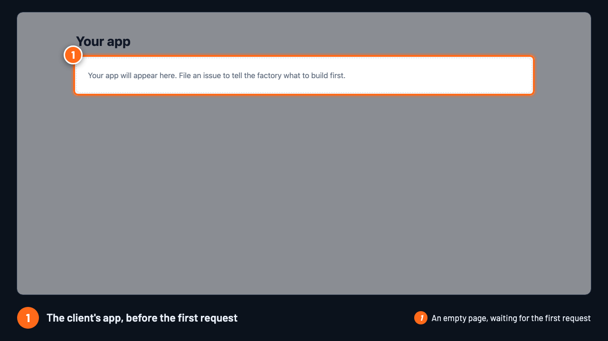
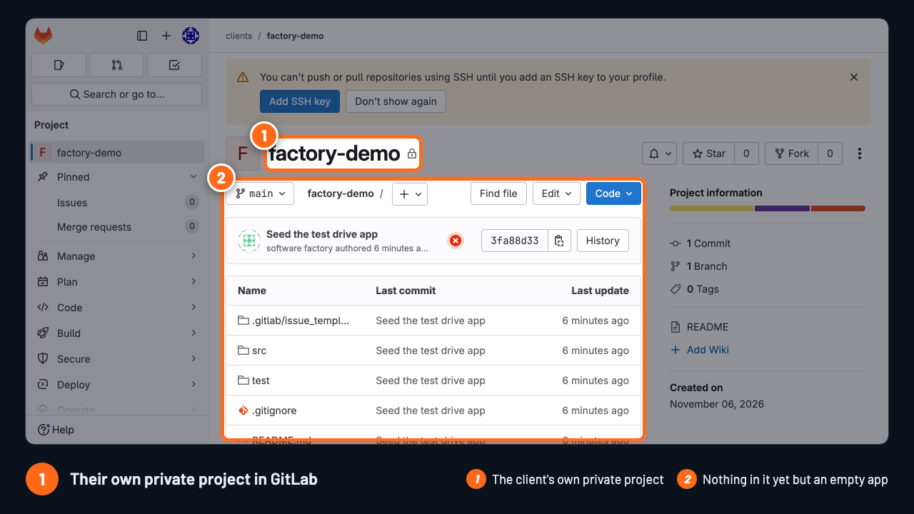
2Ask for something
A new issue, written the way you would message a colleague.
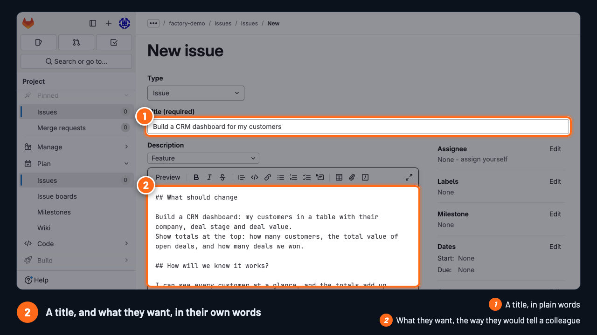

The factory writes it down
Nothing is built until the client agrees with what was understood.
3It picks the request up
Within a minute, it says so on the issue.

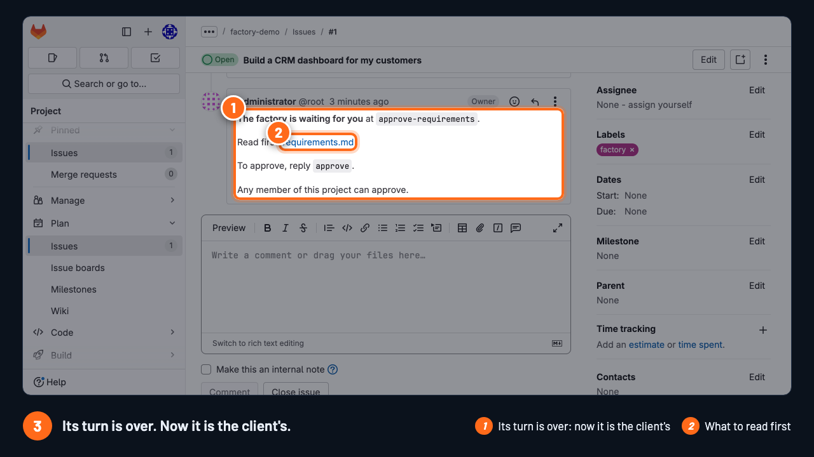
4Read what it understood
The request, turned into stories with checks.
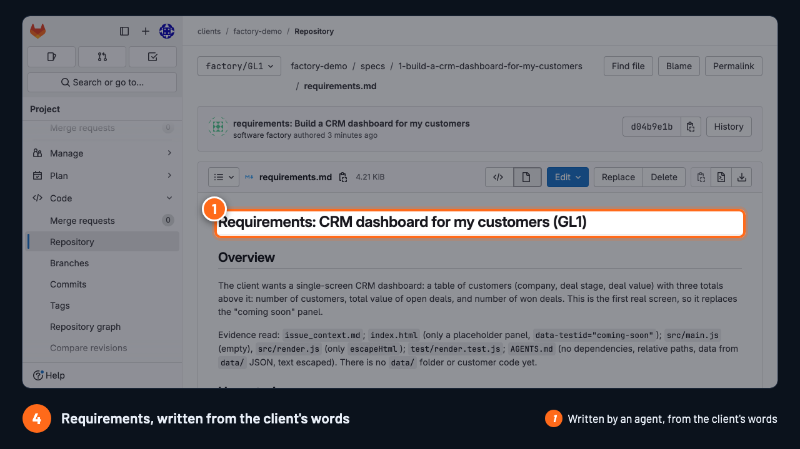
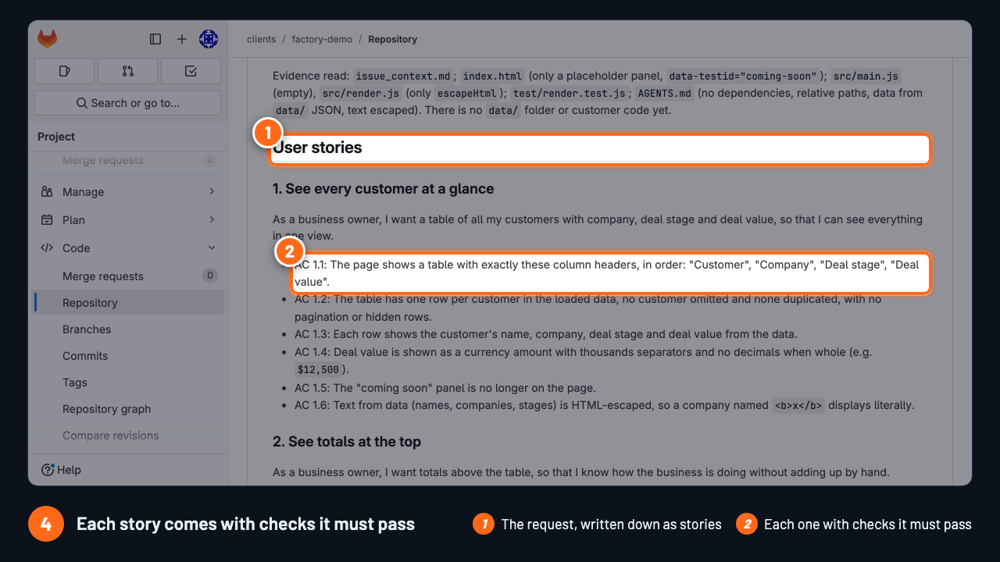
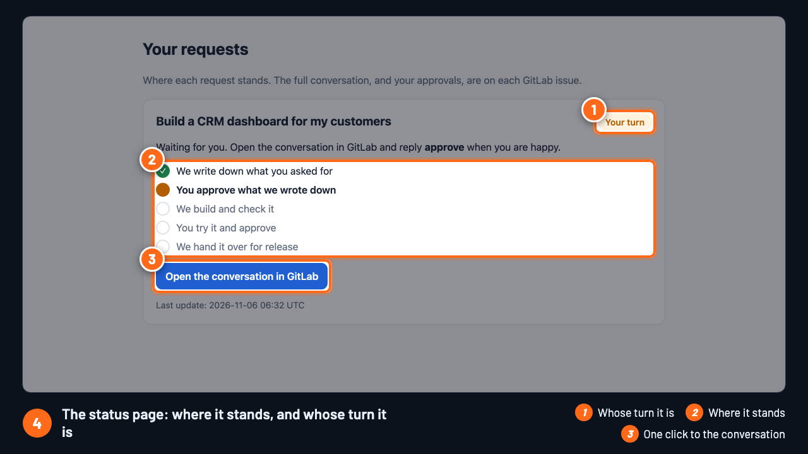
5Approve with one word
Reply approve. That is the whole interface.

One builds, another checks
A maker builds each section. A separate checker verifies it.
6Plan, build, check
Nothing moves on until a second agent says it passed.
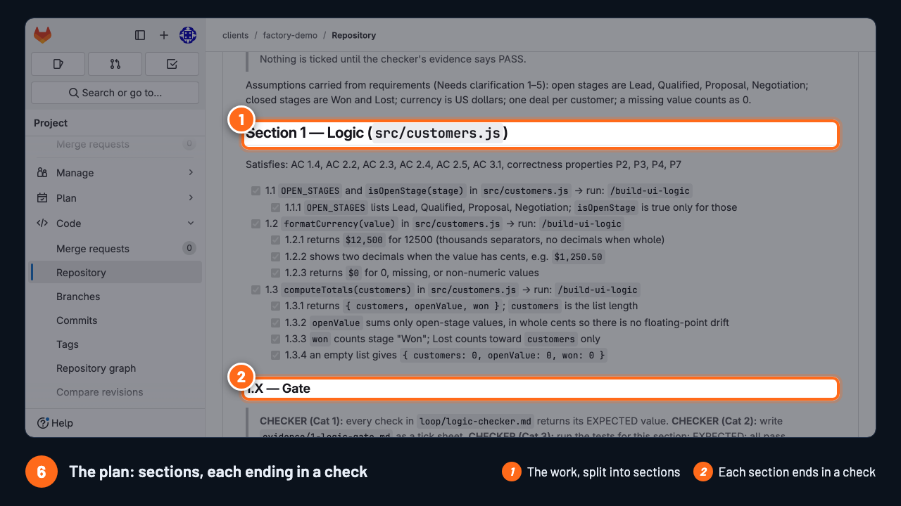
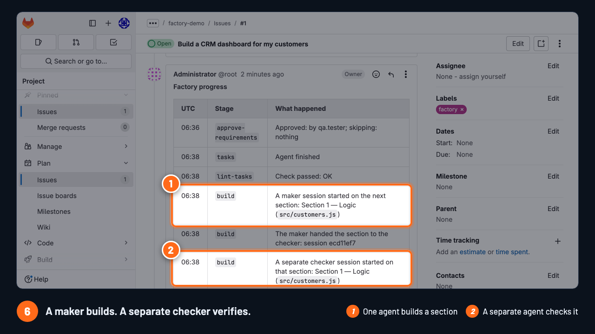
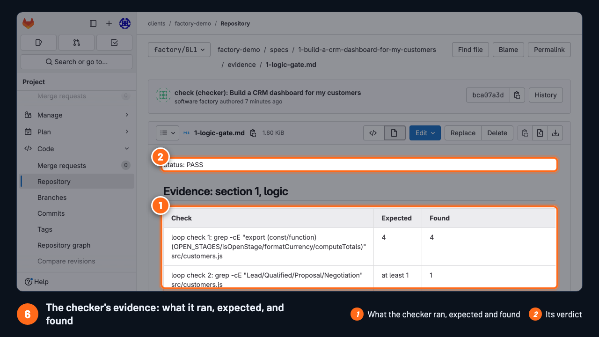

Try it before it ships
The client uses the real change in a browser.
7Use the change
A link to the change, running.

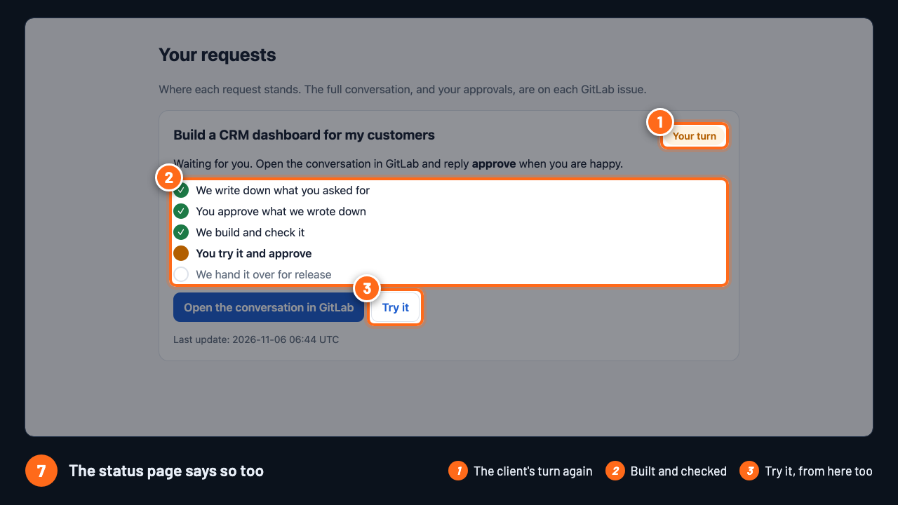
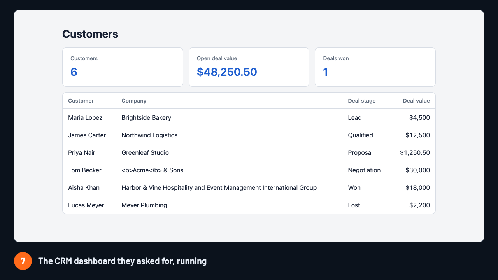
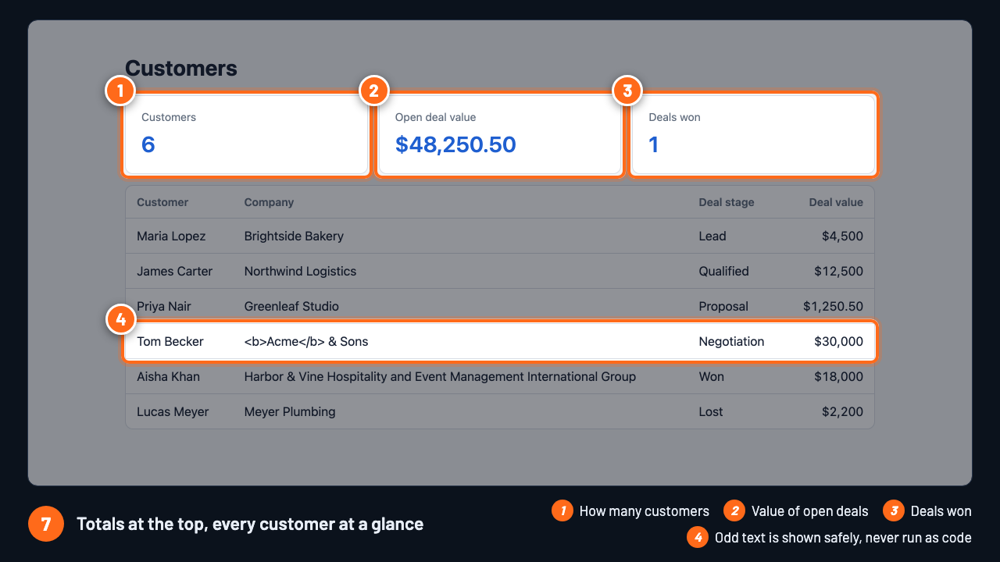
8Approve again
Happy with it? One word again.

Handed over, with proof
A merge request with the code, the tests, the specs and the evidence.
9A merge request opens
Merging stays a person's call.
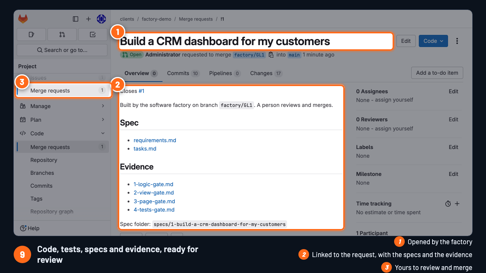
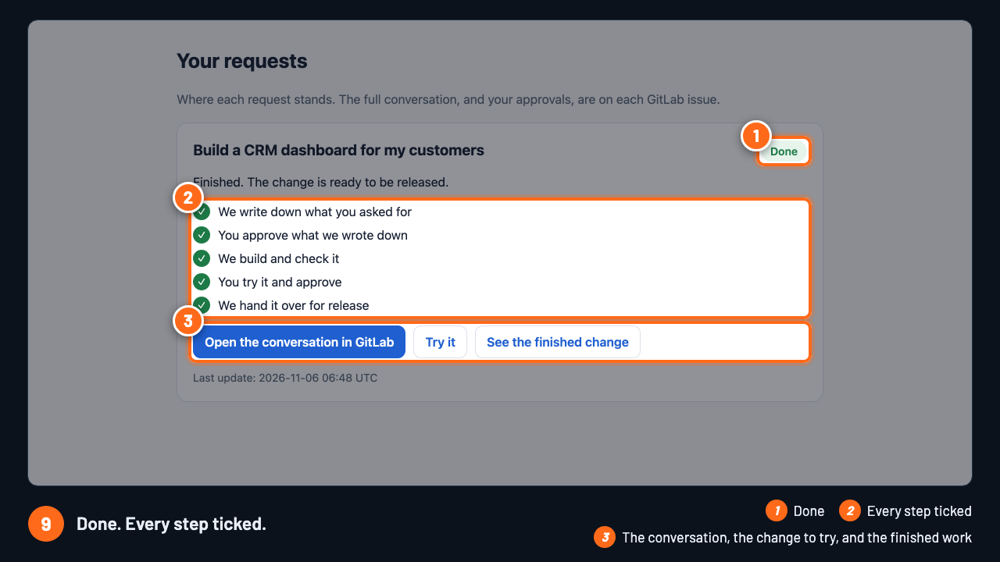
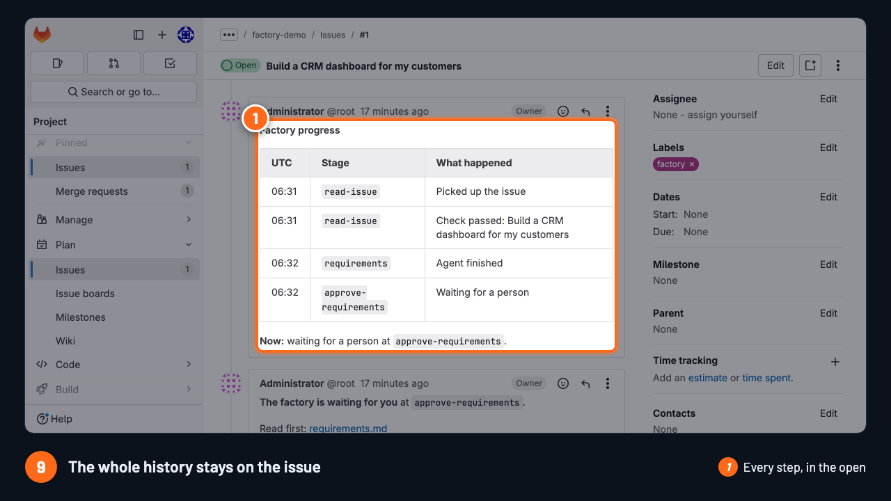
One factory, many clients
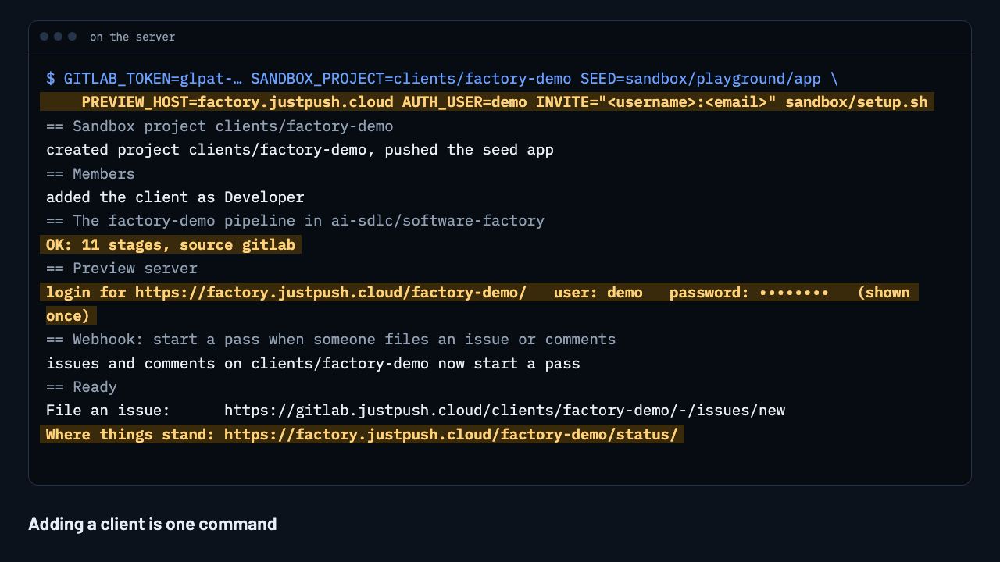
Ask for a project
Get a project of your own, file a small request, and watch it get built.